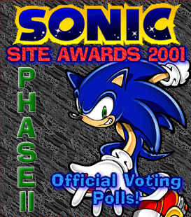

MENU >> Misc Stuff >> Site History - Learn about the Sonic Stadium's past >>Sonic's 10th Anniversary - Site History - Dreadknuxnet - Universal Form |
Sonic Stadium - Site History
Welcome to the Sonic Stadium's history page. For those that have been with the Stadium from the beginning, this will be a not-so-pleasant trip down memory lane as we re-discover the ugly old looks of the Stadium - yes, there were several new layouts, and basically remember all the stuff that Dreadknux has created since up until this day. Many of you though have only just found out about the wonders of the Sonic Stadium, so this will be a nice little introduction for you about how the Stadium was run before you discovered the new look website. All history will appear in the releavant year - I've divided them into years so that page loading will be quicker, there's quite a few things I've done to keep this place up and running. New History will appear on this page first though, before being archived in the releavant year. Well, without further ado, let's get stuck in, right from the very start.
New History12th July 2001
I had to defrag my computer, it was annoying, I tell you, so I couldn't not only use the PC, but defrag was not even working properly! Three days and it hadn't even reached 2%! Just kept going back and forward from 0% to 1% then 0% again >_<. I managed to give it a break and check my e-mails. Jesus! The amount of submissions I had, I had never gotten anything like this amount before. Dead chuffed I was, as I counted all the submissions. After all that, I thanked Tristan - that must have been the source of the mad rush (about 20 in 2 days! ^_^) and checked the hit counter. Well over 1,100, and yet no-one still hasn't posted an image of the count. Ah well, looks like I'll have to re-arrange the main page to sort that out...
 6th July 2001
With the new look Sonic Stadium now open for some time, I thought it was time for a killer app. I wanted to make something else that involved the whole Sonic online community. Most of my other projects have not been so popular, so I decided to go for something that everyone will be interested in. Then it hit me. An awards ceremony. That'll be great, I thought. Next, I needed to make it very original, just like my other ideas before this. I thought about an awards poll, that let everyone who had a Sonic site in with a chance. Other awards just pick the most famous ones. So I decided to let the lesser known sites have the same chance in getting an award for their efforts. I got to work on it, and released it on the above date. Now all I needed was some interest - a thing my site lacked. I sent a notice to my good pal Tristan of TSSZ fame about the whole affair. I also sent messages on the Moogle Cavern Message Board and others.
*What are your opinions on the old Sonic Stadium layouts?
I love hearing from you all!*
dreadknux@knuckles.co.uk
Fill in the form!